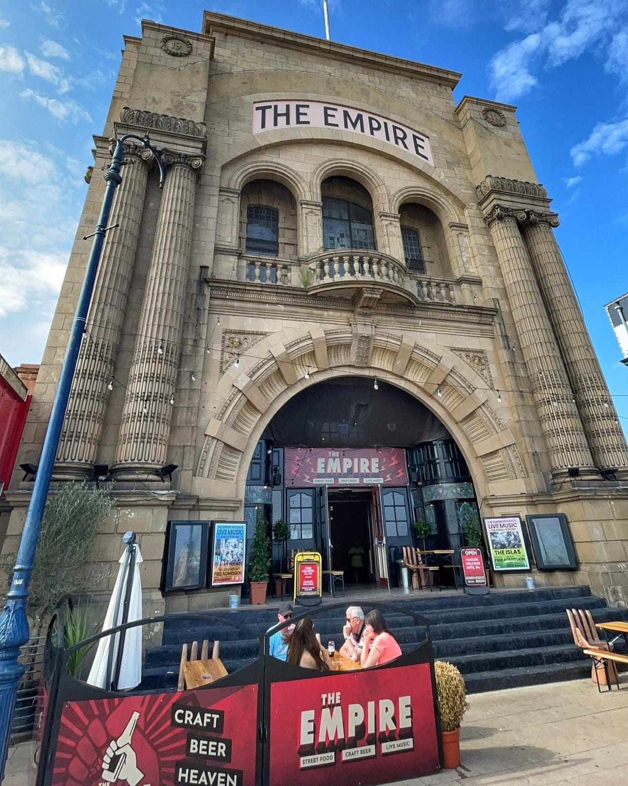

Heritage
The Venue & The Jay Family
The Empire is owned by the Jay family, who also own and produce the world-famous Hippodrome Circus—Britain’s only surviving dedicated circus building and water show.
The Jays are well known for their epic seasonal circus productions, including Pirates Live at Easter, the Summer Spectacular, the Halloween Spooktacular, and the Christmas Spectacular.

A Century of Entertainment
Located on Marine Parade, the Empire Theatre opened in 1911 and stands as one of Great Yarmouth’s most resilient entertainment landmarks.
Designed by architect Arthur Samuel Hewitt, it was originally constructed as the town's second purpose-built cinema.
The Jay family acquired the building in 1947, transitioning it into a lively venue that hosted everything from a bingo hall to late-night movies and morning cartoons. In the late 1980s and early 1990s, it briefly returned to a full-time cinema before transforming into a popular nightclub in the 2000s. In 2020, following extensive post-COVID redesigns, the Jay family revitalised the building as a thriving independent live music, craft beer, and street food destination, which operated successfully for the next five years.
Exciting new use
In 2021, the Hippodrome Circus hosted a flying trapeze act called The Flying Comets for their Christmas show. During an epic New Year’s Eve party, trapeze catcher Mat Herman first proposed the idea of installing a permanent flying trapeze rig in the venue to Jack Jay. At the time, however, the music must have been too loud.
Mat went on to form Steal This Circus CIC, a company dedicated to fabricating professional circus equipment, bringing flying trapeze to disadvantaged areas, and coaching recreational flyers to enter the professional performance scene.
In August 2025, due to rising operational costs, the Jay family announced the closure of The Empire. Mat packed his bags and moved to Great Yarmouth the next day. With generous support from Out There Arts, he established himself in Great Yarmouth as a stubborn fixture, proceeding to annoy the Jay family at every available opportunity. After months of meetings and site visits, they finally agreed to let him install a full-time circus facility in the building.